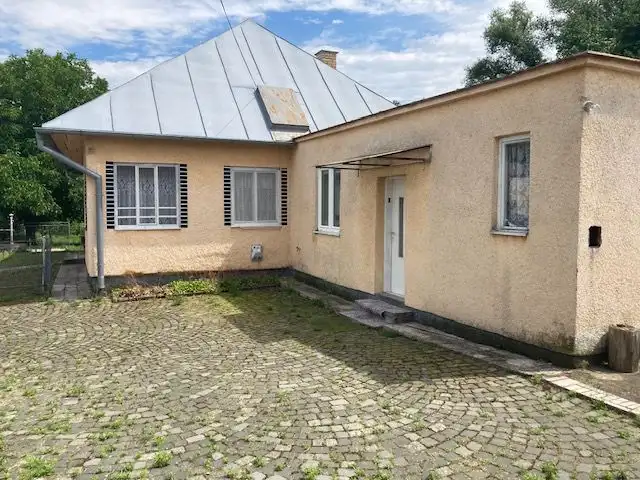
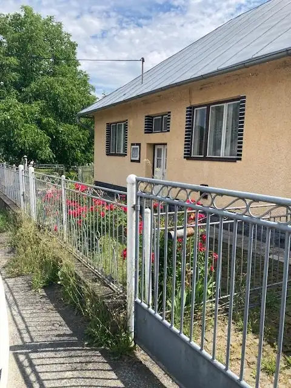
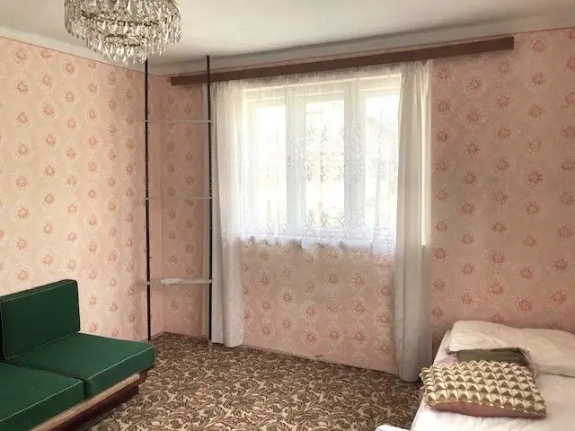
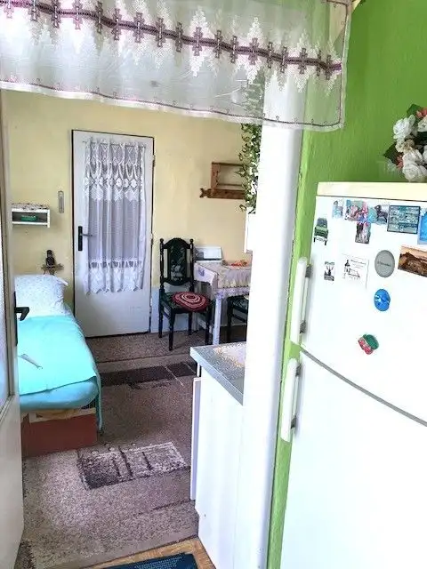
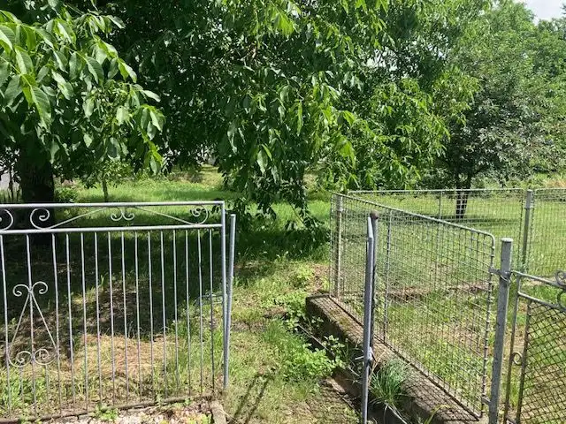
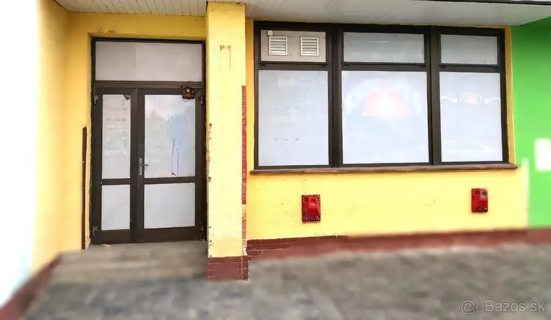
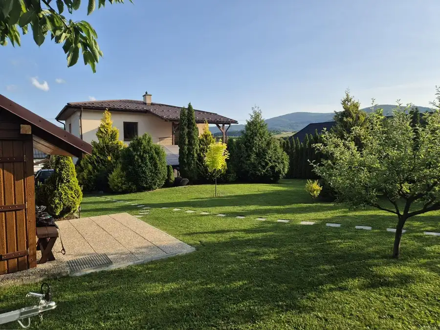
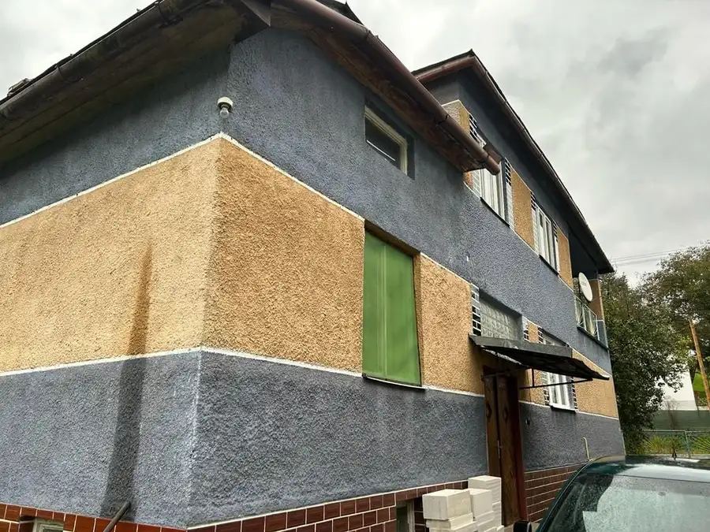

RD medzi VT a PO so širokým pozemkom a všetkými IS
Bystré





- Plocha100 m²
- StavPôvodný stav
O nehnuteľnosti
RD v pôvodnom stave, s krásnym pozemkom s kompletnými inž. sieťami medzi VT a PO.Dom je postavený na veľkom rovinatom pozemku o výmere 1189 m2 a vstupnou šírkou 51 m, v atraktívnej lokalite len 28 km od Prešova smer VT.Na pozemku sa nachádza starší rodinný dom v pôvodnom stave s novšou prístavbou (stavebný materiál prevažne tehla, strecha plechová) so všetkými inžinierskymi sieťami: elektrina, plyn, obecná kanalizácia a vodovod. Na pozemku je aj studňa.Bočná prístavba domu je plne funkčná a obývateľná. Dispozícia domu: vstupná chodba, hlavné obytné izby, vedľajšie obytné izby, kuchyňa, špajza, kúpeľňa s wc, kúpeľňa v staršej časti domu, v suteréne pivnica.Vykurovanie domu je riešené gamatkami v dvoch obytných izbách a kachľovou pecou pre ďalšie izby. Ohrev vody zabezpečený elektrickým bojlerom.Dom si vyžaduje značnú rekonštrukciu v štandardne moderného bývania, no široký pozemok a atraktívna poloha to vyvážia. Ponuka je vhodná pre záujemcov, ktorí si plánujú vytvoriť útulný domov podľa vlastných predstáv pre pokojné bývanie v tichej obci Bystré s výbornou dostupnosťou do Vranova nad Topľou aj do Prešova.Bližšie informácie:Ing. Vladimíra Zamborová0908 710 809vladimira.zamborova@zgroup.sk
Parametre
- Druh
- Rodinný dom
- Dátum zverejnenia
- 03. 07. 2026
- Energetický certifikát budovy
- nie je
- Plocha pozemku
- 1189 m²
- Počet nadzemných podlaží
- 1
- Stav nehnuteľnosti
- Pôvodný stav
- Terén pozemku
- Rovinatý
- Typ
- Predaj
- Typ konštrukcie
- Tehlová
- Vykurovanie
- Lokálne
- Zastavaná plocha
- 120 m²
- Úžitková plocha
- 100 m²
Kde to je


Mohlo by Vás zaujímať

Komerčné priestoryNové Cena na vyžádáníPriestor 90 m2 VT: ambulancia/barber/kozmetika/pizza/obchod/ Vranov nad Topľou 90 m²
DomNové Cena na vyžádáníNA PREDAJ Krásny rodinný dom s investičným pozemkom v Zámutove Zámutov 300 m²
DomNové 43 900 €Rodinný dom Pčoliné - Snina 43.900,-eur Pčoliné 100 m²